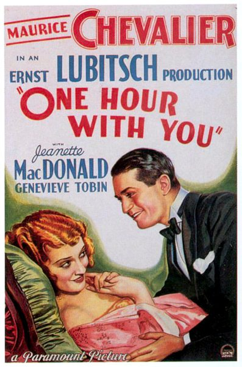

One Hour with You

Starring: Maurice Chevalier, Jeanette MacDonald, Genevieve Tobin
Director: Ernst Lubitsch, George Cukor
Writer: Samson Raphaelson
Producer: Ernst Lubitsch
One Hour with You is a 1932 American pre-Code musical comedy film about a married couple who are attracted to other people. It was produced and directed by Ernst Lubitsch "with the assistance of" George Cukor, and written by Samson Raphaelson from the play Only a Dream by Lothar Schmidt. It stars Maurice Chevalier, Jeanette MacDonald, Genevieve Tobin, Charlie Ruggles and Roland Young.
Trivia
- Nominated for: Academy Award for Best Picture.
- Lubitsch was originally scheduled to direct One Hour with You and supervised the project in preproduction, but was unable to direct because his previous film, The Man I Killed, went beyond schedule.
- George Cukor was instead assigned to direct.
- Within two weeks after filming had begun, conflicts between Chevalier and Cukor brought Lubitsch back, although Cukor remained on the set.
Previous Showings
15 Runs • 10 Festivals
8,768 tickets sold
Original Billings: 1 run (April 20, 1932)
Original Run: April 20, 1932 (Wednesday - Saturday)
All runs on record (15):
- April 20, 1932 (Wednesday - Saturday)Maurice Chevalier, Jeannette MacDonald
- February 6 - 9, 1988 · 0 ticketsw/ The Merry Widow (1934), The Love Parade, Monte Carlo, Love Me Tonight, The King Steps Out
- October 12 - 14, 1990 · 1,035 ticketsw/ The Love Parade, The Smiling Lieutenant
- February 1 - 4, 1992 · 1,179 ticketsw/ Desire
- October 11 - 13, 1995 · 497 ticketsw/ The Love Parade
- August 20 - 21, 1998 · 731 ticketsDear Old Hollywoodw/ Midnight
- March 1 - 2, 2001 · 803 ticketsHollywood Musicals, 1929-1939w/ Love Me Tonight
- September 22 - 23, 2005 · 586 ticketsSummer 2005w/ The Merry Widow
- March 24 - 25, 2007 · 1,017 ticketsFilm Noir, Val Lewton, 1930s musicals and more!w/ Dinner at Eight
- March 19 - 21, 2011 · 663 ticketsWinter 2011 Early Bette Davis, Val Lewton and morew/ The Merry Widow
- March 3 - 5, 2012 · 803 ticketsWinter 2012w/ Trouble in Paradise
- April 15 - 16, 2015 · 223 ticketsCary Grant, plus Ernst Lubitsch and Rouben Mamoulianw/ The Song of Songs
- September 22, 2016 · 147 ticketsVienna and the Moviesw/ The Marriage Circle
- February 23 - 24, 2017 · 443 ticketsBritish and Lubitschw/ Trouble in Paradise
- March 1 - 2, 2025 · 641 ticketsLubitsch, Mamoulian, Sternberg Three Great Directorsw/ The Marriage Circle